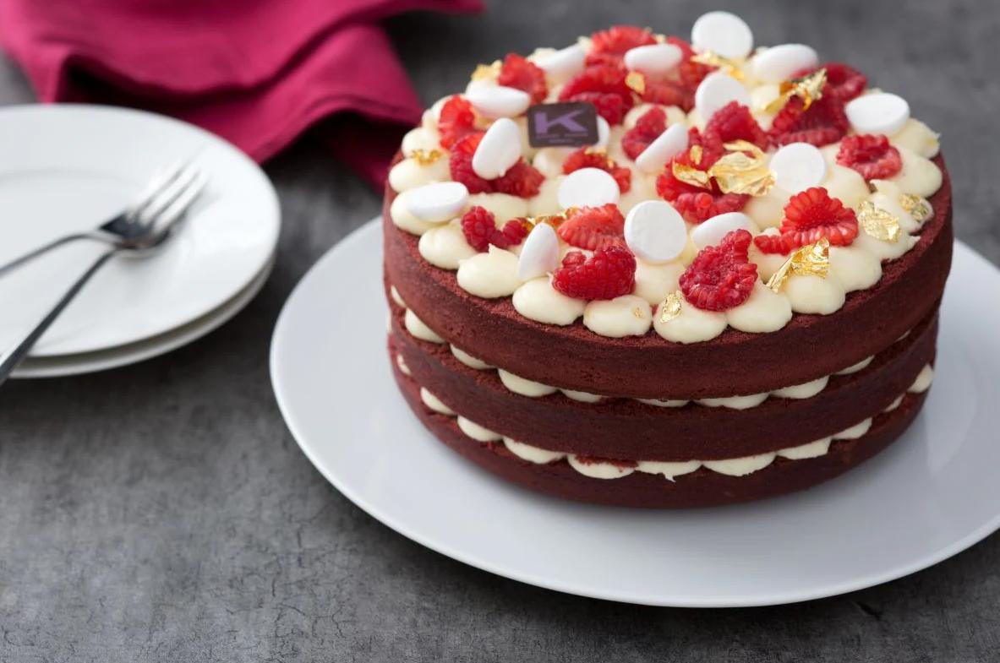

Red Velvet Cake

Master Course:
The Red Velvet Cake, literally red velvet cake, is a truly delicious and spectacular cake of American origin.
In addition to a slightly tangy taste, its uniqueness lies in the bright red color that contrasts with the white color of the cream cheese frosting, with a smooth and velvety texture: a chromatic combination that also makes it perfect as a holiday dessert, perhaps in the form of a roll!
It is said that the recipe for this cake dates back to the early 1900s in the United States, where it was served at The Waldorf Astoria Hotel restaurant.
The Red Velvet Cake, like the New York Cheesecake, is one of the most popular American desserts in the United States and the world.
Today in the Giallozafferano kitchen, we had the honor of hosting the master Ernst Knam, who revealed all the secrets to preparing a perfect red velvet, just like in his pastry shop!
Ingredients
Ingredients for a 20 cm mold
- Butter 5.3 oz (150 g) - at room temperature
- Eggs 4.2 oz (120 g)
- Vanilla bean 1
- Unsweetened cocoa powder 0.4 cup (50 g)
- Type 00 flour 3.1 cups (375 g)
- White wine vinegar 2 tbsp (30 g)
- Sugar 1.9 cups (375 g)
- Fine salt 1 tsp (5 g)
- Food coloring 2 tbsp (30 g) - red liquid
- Natural plain yogurt 1 ¼ cup (300 g) - whole
- Powdered yeast for sweets 2 tsp (10 g)
For the cheese frosting
- Fresh cheese 18.5 oz (525 g) - creamy, at room temperature
- Powdered sugar 2 ½ cups (300 g)
- Butter 2 cups (150 g) - at room temperature
- Lemon peel 1 - untreated
For decoration
- Raspberries to taste
- Meringues to taste - (small)
- Edible gold to taste - 24 K, in leaves
Steps
- To prepare the red velvet cake, start with the base batter: in a stand mixer fitted with the paddle attachment, add the room temperature butter and granulated sugar.
- Begin working the mixture at medium speed until it is well whipped and the sugar has dissolved.
- Only at this point can you add about half of the lightly beaten eggs.
- Continue working the mixture and when absorbed, add the rest of the eggs.
- Work for a few more moments, then add the salt and the seeds of the vanilla bean.
- Turn on the mixer again for a few seconds at medium speed, then add the red food coloring and whip everything for 3-4 minutes until you get a smooth and fluffy mixture.
- Stop the mixer, detach the bowl, and sift the cocoa powder inside.
- Mix very gently with a spatula using movements from bottom to top: mix just enough to absorb the cocoa, only this way will you avoid deflating the batter.
- Add the yogurt all at once and mix carefully using the spatula.
- Sift the flour along with the baking powder directly into the mixer bowl.
- Mix from bottom to top until completely incorporated and you have a homogeneous mixture.
- Finally, add the vinegar and mix again.
- Position a 20 cm (8-inch) pastry ring on a baking sheet lined with parchment paper.
- Line the ring with a strip of parchment paper to raise the edge.
- Pour the batter inside and level the surface with a spatula.
- At this point bake in a preheated static oven at 350°F for about 75 minutes.
- Make sure the cake is cooked by performing the toothpick test, and take it out of the oven.
- Let it cool slightly, then remove the steel ring and the parchment paper.
- Turn the cake upside down on a plate and let it cool completely.
- At this point, set aside the base of your red velvet and prepare the cream cheese frosting.
- Pour the cream cheese into the mixer fitted with the paddle attachment.
- Add the room temperature butter and turn the machine on at high speed for a few seconds.
- Then add the powdered sugar and the grated lemon zest.
- Work everything for 3-4 minutes, increasing the mixer speed.
- You should obtain a smooth and soft consistency.
- At this point, transfer to a bowl and place in the refrigerator for about 15 minutes.
- In the meantime, proceed to cut the cake.
- You can make small incisions in 3 points of the cake to be more precise.
- Then, with a serrated knife, cut the first layer, continuously rotating the cake.
- Gently move it aside and do the same for the second layer, to get 3 equal layers.
- At this point, place the frosting in a pastry bag fitted with a plain tip.
- Start assembling the cake, keeping in mind that the part that was your initial surface will now be the bottom layer.
- Fill the cake with about 1/3 of the frosting by squeezing out dollops and placing them next to each other to cover the entire surface of the cake.
- Place the second layer of cake on top and do the same as before, filling it with half of the remaining frosting.
- Then place the last layer and finish decorating with dollops of cream cheese frosting.
- Cut the raspberries in half and use them to decorate the cake, spreading them out neatly.
- Complete the decoration with a few small meringues and pieces of gold leaf, handling it as little as possible.
- Your Red Velvet cake is ready, store it in the refrigerator until ready to enjoy.
Return to top
Return to Main Page